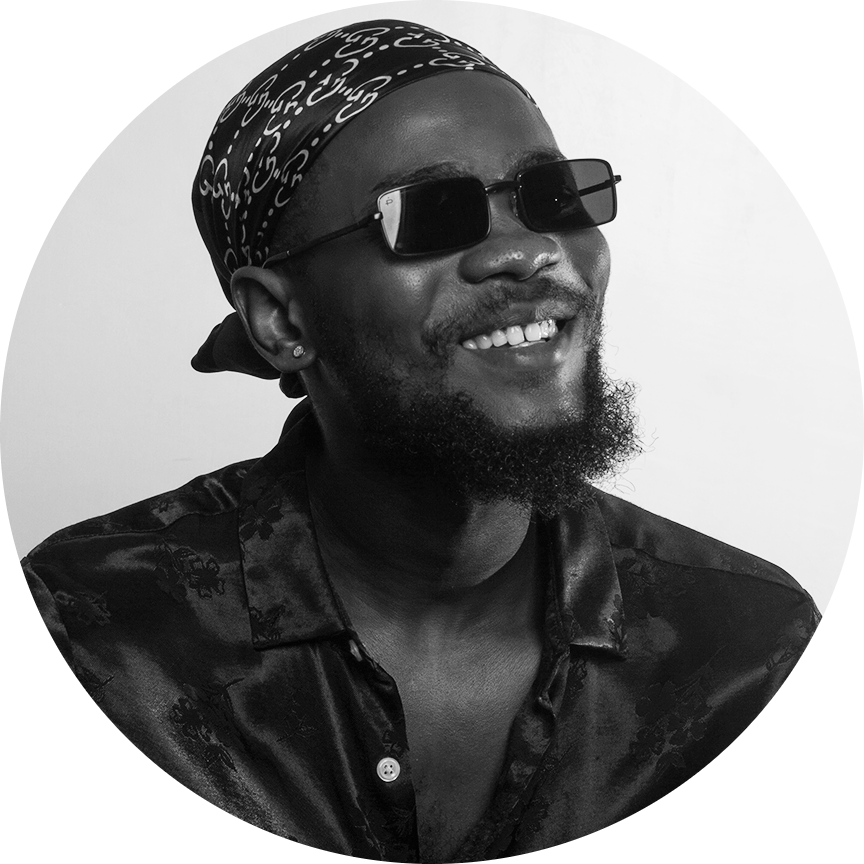

Timi Orins

Summary
I am a Photographer and a web developer. I am a hardworking and dilligent individual with experience as a customer representative.
Education
- OND, Mass Communication. Yaba College of Technology. (2017-2019)
- BA, International Relations, Politics and Security Studies.
Work Experience
-
Intern Journalist - Traffic Radio, ikeja. Lagos.
January - April 2019
- Compiled and edited news stories for the news caster to present on air
- I was present in the team that edited stories to be posted on the news blog of Traffic Radio.
-
Customer Representative, Finetouch, Salon. Ibadan.
January - April 2021
- Resolved customer complaints through the phone.
- Answered customer calls and helped take orders through the phone.
Skills
- Communication: ⭐⭐⭐⭐
- photography: ⭐⭐⭐⭐
- Organizational skills: ⭐⭐⭐⭐
Certifications
- Name of Training : Prevention and Management of Violence and Aggression (PMVA)
Organizer : Simplecare Training Academy (Keith Makawa)
Year of completion : Oct 29, 2022
Other